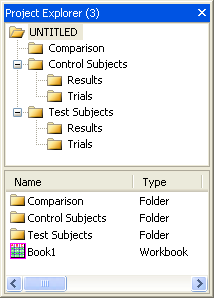

Document コマンドは、LabTalkコマンドで、Originプロジェクトに関するさまざまな操作を実行します。 documentコマンドのシンタックスは次のようになっています。
document -option value;
Note:
内部的に、Originはプロジェクトを修正した事を示すプロパティを更新します。現在のプロジェクトが修正されているときにプロジェクトを開こうとすると、通常、現在のプロジェクトを保存を促します。documentコマンドは、このプロパティを制御するオプションがあります。
注意保存するかどうかを尋ねるプロンプトがオフ document -s; // ''doc'' は ''document'' の短縮形、 ''n'' は ''new''の短縮形 doc -n;
doc -oコマンドを使って、プロジェクトを開く/保存、saveコマンドでプロジェクトを保存します。
// Originプロジェクトファイルを開く string fname$ = SYSTEM.PATH.PROGRAM$ + "Origin.opj"; doc -o %(fname$); // ''document -open''の短縮形 // 変更を行う %(Data1,1) = data(0,100); %(Data1,2) = 100 * uniform(101); // 新しい場所に新しい名前でプロジェクトを保存 fname$ = SYSTEM.PATH.APPDATA$ + "My Project.opj"; save %(fname$);
前のスクリプトに続けて、別のプロジェクトを追加することができます。Originは、同時に1つのプロジェクトファイルのみをサポートするため、既存のプロジェクトと追加されたプロジェクトがひとつのプロジェクトになります。
// Originプロジェクトファイルを現在のファイルに追加 fname$ = SYSTEM.PATH.PROGRAM$ + "Origin.opj"; doc -a %(fname$); // Abbreviation of ''document -append'' // 現在のプロジェクトを保存 - これは ''My Project.opj'' save; // 新しい名前で現在のプロジェクトを新しい場所に保存 save C:\Data Files\working.opj;
Originで、グラフ、ワークブック、行列、Excelブックなどの子ウィンドウを1つのファイルに保存することができます。Appendは、別のプロジェクトにファイルを追加するのに使うことができます。ワークブック、行列、グラフに対しては、適切な拡張子が自動的に追加されますが、Excelウィンドウには.XLSを指定する必要があります。
// saveコマンドはアクティブウィンドウに対して行われる save -i C:\Data\MyBook;
Append は、次のウィンドウの種類をロードするのに使うことができます。
// ワークブック(*.OGW), 行列(*.OGM), グラフ(*.OGG), Excel(*.XLS) dlgfile group:=*.ogg; // fnameはdlgfile Ｘファンクションでセットされる文字列変数 doc -a %(fname$);
Excelに対して、ExcelファイルをExcelとして開くのではなく、インポートするように指定することができます。
doc -ai "C:\Data\Excel\Current Data.xls";
ノートウィンドウは、特殊なオプションスイッチを使った特別なケースです。
// Notes1という名前のノートウィンドウを保存 save -n Notes1 C:\Data\Notes\Today.TXT; // MyNotesという名前のノートウィンドウにテキストファイルを読み込む open -n C:\Data\Notes\Today.txt MyNotes;
これはOrigin 8.1から導入された機能で、外部的にリンクしたExcelブックを現在のファイル名で保存します。
save -i;
次のコマンドを使って、ウィンドウをリフレッシュすることができます。
doc -u;
次のXファンクションは、DOSコマンドのように利用して、プロジェクトのサブフォルダを作成したり、削除したり、移動することができます。
| 名前 | 説明 |
|---|---|
| pe_dir |
アクティブフォルダの内容を表示します。 |
| pe_cd |
別のフォルダに変更します。 |
| pe_move |
フォルダまたはウィンドウを移動します。 |
| pe_path |
現在のパスをレポートします。 |
| pe_rename |
フォルダまたはウィンドウの名前を変更します。 |
| pe_mkdir |
フォルダを作成します。 |
| pe_rmdir |
フォルダを削除します。 |
この例では
doc -s; // Originの保存フラグを消去 doc -n; // 新しいプロジェクトを開始 pe_cd /; // トップレベルに移動 pe_mkdir "Test Subjects"; // フォルダを作成 pe_cd "Test Subjects"; // フォルダに移動 pe_mkdir "Trials"; // サブフォルダを作成 pe_mkdir "Results"; // もう一つ作成 pe_cd /; // トップレベルに移動 pe_mkdir "Control Subjects"; // 別のフォルダを作成 pe_cd "Control Subjects"; // そのフォルダに移動 pe_mkdir "Trials"; // サブフォルダを作成 pe_mkdir "Results"; // 別のフォルダを作成 pe_cd /; // トップレベルに移動 pe_mkdir "Comparison"; // フォルダを作成
プロジェクトエクスプローラ内で下図のようにフォルダ構造を作成しています。 :

環境設定 ：オプション ：オープン/クローズで、サブフォルダ中にオープンするが有効の場合、Options :Folder1という名前のフォルダを追加します。